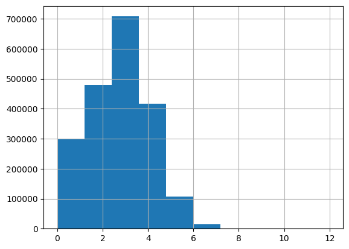

!pip install textstat -qq
!pip install datasets -qqCalculating the Flesch Kincaid Reading Grade Level for the TinyStories Dataset
python
machine learning
deep learning
TinySentiment
In this blog post I explore the Flesch Kincaid reading grade level formula and implementation in the
textstat library to calculate it for the TinyStories dataset.
Background
In this notebook I’ll calculate the Flesch Kincaid reading grade level for the TinyStories dataset.
This is part of a larger project I’m working on where my goal is to train the TinyInstruct-33M model on a simplified, lower reading level version of the financial_phrasebank dataset. I’m experimenting with using phi-3 to simplify the sentences in the original financial_phrasebank dataset using language appropriate for low reading grade levels. To establish a baseline of what reading level of text TinyInstruct-33M is capable of understanding, I’ll measure the reading level across the TinyStories dataset in this notebook using the textstat library.
Reading Grade Level of a Sample Story
from datasets import load_dataset
import numpy as np
import textstat
ds = load_dataset("roneneldan/TinyStories")According to the textstat library, the following story has a reading grade level of 3.8.
text = ds['train'][0]['text']
text'One day, a little girl named Lily found a needle in her room. She knew it was difficult to play with it because it was sharp. Lily wanted to share the needle with her mom, so she could sew a button on her shirt.\n\nLily went to her mom and said, "Mom, I found this needle. Can you share it with me and sew my shirt?" Her mom smiled and said, "Yes, Lily, we can share the needle and fix your shirt."\n\nTogether, they shared the needle and sewed the button on Lily\'s shirt. It was not difficult for them because they were sharing and helping each other. After they finished, Lily thanked her mom for sharing the needle and fixing her shirt. They both felt happy because they had shared and worked together.'textstat.flesch_kincaid_grade(text)3.8I checked a few online Flesch-Kincaid calculators and got a wide variety of results:
- goodcalculators.com: 4.5
- serpninja.io: 5.49
- charactercalculator.com: 6.76
- online-utility.org: 5.4
Why so much variability? I’ll take a closer look at the Flesch-Kincaid reading grade level formula from the Wiki page:
\[0.39\big(\frac{\text{total words}}{\text{total sentences}}\big) + 11.8\big(\frac{\text{total syllables}}{\text{total words}}\big) - 15.59\]
Counting by hand, there are a 134 total words, 9 total sentences and 169 syllables. Plugging this into the formula, you get a reading level of 5.09.
def fk_reading_level(w, s, sy):
return 0.39*(w/s) + 11.8*(sy/w) - 15.59fk_reading_level(134, 9, 169)5.098756218905475I’m guessing that one source of variability is how you count sentences. For example, if I choose to count the full dialogue as part of a sentence (in sentence # 4), the number of sentences is 9:
One day, a little girl named Lily found a needle in her room.
She knew it was difficult to play with it because it was sharp.
Lily wanted to share the needle with her mom, so she could sew a button on her shirt.
Lily went to her mom and said, “Mom, I found this needle. Can you share it with me and sew my shirt?”
Her mom smiled and said, “Yes, Lily, we can share the needle and fix your shirt.”
Together, they shared the needle and sewed the button on Lily’s shirt.
It was not difficult for them because they were sharing and helping each other.
After they finished, Lily thanked her mom for sharing the needle and fixing her shirt.
They both felt happy because they had shared and worked together.
On the other hand, if I split the multiple-sentence dialogue into multiple sentences, the number of sentences increases to 10 and the reading level drops to 4.5.
fk_reading_level(134, 10, 169)4.518089552238806
One day, a little girl named Lily found a needle in her room.
She knew it was difficult to play with it because it was sharp.
Lily wanted to share the needle with her mom, so she could sew a button on her shirt.
Lily went to her mom and said, “Mom, I found this needle.
Can you share it with me and sew my shirt?”
Her mom smiled and said, “Yes, Lily, we can share the needle and fix your shirt.”
Together, they shared the needle and sewed the button on Lily’s shirt.
It was not difficult for them because they were sharing and helping each other.
After they finished, Lily thanked her mom for sharing the needle and fixing her shirt.
They both felt happy because they had shared and worked together.
Deeper Dive into textstat
Here’s the Flesch-Kincaid grade level calculation code in textstat:
sentence_length = self.avg_sentence_length(text)
syllables_per_word = self.avg_syllables_per_word(text)
flesch = (
float(0.39 * sentence_length)
+ float(11.8 * syllables_per_word)
- 15.59)
return self._legacy_round(flesch, 1)For the given text I’m using, here are the stats using textstat methods, compared to my manual calculations:
| Statistics | textstat |
Manual Calcs |
|---|---|---|
| Total Words | 134 | 134 |
| Total Sentences | 10 | 10 |
| Total Syllables | 163 | 169 |
textstat.lexicon_count(text), \
textstat.sentence_count(text), \
textstat.syllable_count(text)(134, 10, 163)lexicon_count optionally removes punctuation from the text and and splits the string by empty spaces:
if removepunct:
text = self.remove_punctuation(text)
count = len(text.split())
return countsentence_count which calculates the number of sentences (that have more than 2 words) by matching groups of text in between sentence-ending punctation (.?!):
sentences = re.findall(r'\b[^.!?]+[.!?]*', text, re.UNICODE)
for sentence in sentences:
if self.lexicon_count(sentence) <= 2:
ignore_count += 1
return max(1, len(sentences) - ignore_count)syllable_count uses the library pyphen:
for word in text.split():
count += len(self.pyphen.positions(word)) + 1
return countThe difference between my manually calculated reading grade level and textstat’s is a matter of 6 syllables. I looked at the output of len(self(pyphen.positions(word)) + 1) and my manual counts for each word and found that for all six cases of the word "Lily", I counted two syllables (Li-ly) while pyphen returned 1 syllable.
It’s amazing that a difference of 6 syllables can lead to almost a full grade level difference!
textstat, and pyphen indirectly, seems to undercount syllables:
for word in ['vishal', 'pakistan', 'afghanistan', 'legolas', 'synchronicity', 'persiphone', 'camera', 'reward', 'appalachian']:
print(f"{word}: {textstat.syllable_count(word)}")vishal: 1
pakistan: 2
afghanistan: 1
legolas: 2
synchronicity: 4
persiphone: 3
camera: 2
reward: 2
appalachian: 3Keeping in mind that the reading grade level calculated by textstat maybe be consistently too low, I’ll move forward with using it to establish the baseline reading level for the TinyStories dataset.
Reading Level for the TinyStories Training Set
I’ll apply textstat.flesch_kincaid_grade to each row of the training data set for TinyStories:
ddf = ds['train'].to_pandas()ddf.shape(2119719, 1)ddf.iloc[0]| 0 | |
|---|---|
| text | One day, a little girl named Lily found a needle in her room. She knew it was difficult to play with it because it was sharp. Lily wanted to share the needle with her mom, so she could sew a button on her shirt.\n\nLily went to her mom and said, "Mom, I found this needle. Can you share it with me and sew my shirt?" Her mom smiled and said, "Yes, Lily, we can share the needle and fix your shirt."\n\nTogether, they shared the needle and sewed the button on Lily's shirt. It was not difficult for them because they were sharing and helping each other. After they finished, Lily thanked her mom for sharing the needle and fixing her shirt. They both felt happy because they had shared and worked together. |
This took about 14.5 minutes to run:
ddf['fk_grade'] = ddf['text'].apply(lambda x: textstat.flesch_kincaid_grade(x))The mean and median Flesch-Kincaid reading level of the TinyStories dataset (using textstat.flesch_kincaid_grade) is about 2.6 and 2.7, respectively. Keeping in mind that textstat may be underestimating the reading level, perhaps by 1 grade level (or more). The minimum grade level is somehow negative (-15.7) and the maximum is somehow 74.
ddf['fk_grade'].describe()| fk_grade | |
|---|---|
| count | 2.119719e+06 |
| mean | 2.553505e+00 |
| std | 1.485081e+00 |
| min | -1.570000e+01 |
| 25% | 1.600000e+00 |
| 50% | 2.700000e+00 |
| 75% | 3.600000e+00 |
| max | 7.410000e+01 |
Viewing the data between kindergarten (Grade 0) and Grade 12, about a third of the texts are between grades 2 through 4.
ddf['fk_grade'].hist(range=(0,12));
85% of the stories are at or below a Grade 4 reading level. 99% of them are at or below a Grade 6 level.
ddf.query('fk_grade <= 4')['text'].count() / len(ddf)0.8508873110067892ddf.query('fk_grade <= 6')['text'].count() / len(ddf)0.9937878558431565The story with the grade level of 74 has 750 words with 1033 syllables across only 4 sentences. The ratio of words per sentence is a staggering 187.5, which is greatly inflating the reading level.
hard_text = ddf.query('fk_grade > 74').iloc[0]['text']
hard_text"Lily and Tom were playing in the kitchen. They liked to pretend they were chefs and make yummy food. They had a big pot and some spoons and bowls. They put water and salt and sugar and flour and carrots and apples and cheese and cookies and milk and eggs and bananas and pasta and bread and jam and butter and ketchup and mustard and chocolate and candy and nuts and beans and corn and peas and rice and meat and fish and cheese and yogurt and cereal and juice and tea and coffee and soda and water and ice and lemon and lime and orange and grape and cherry and strawberry and blueberry and raspberry and blackberry and cranberry and pineapple and mango and kiwi and coconut and melon and peach and plum and pear and apple and apricot and nectarine and grapefruit and pomegranate and fig and date and olive and avocado and tomato and cucumber and lettuce and spinach and kale and cabbage and broccoli and cauliflower and celery and carrot and onion and garlic and ginger and turmeric and parsley and basil and mint and rosemary and thyme and oregano and sage and dill and cilantro and chives and scallions and leeks and mushrooms and peppers and zucchini and squash and pumpkin and eggplant and potato and sweet potato and yam and cassava and taro and plantain and breadfruit and jackfruit and durian and lychee and rambutan and dragon fruit and star fruit and passion fruit and guava and papaya and persimmon and loquat and kumquat and tangerine and clementine and mandarin and satsuma and pomelo and ugli and quince and medlar and mulberry and elderberry and gooseberry and currant and cranberry and lingonberry and loganberry and boysenberry and huckleberry and bilberry and cloudberry and salmonberry and dewberry and blackcurrant and redcurrant and whitecurrant and jostaberry and worcesterberry and gooseberry and aronia and chokeberry and serviceberry and saskatoon and juneberry and honeyberry and blue honeysuckle and sea buckthorn and wolfberry and goji and acai and maqui and camu camu and lucuma and baobab and moringa and spirulina and chlorella and wheatgrass and barley grass and oat grass and rye grass and alfalfa and clover and fenugreek and flax and hemp and chia and sesame and sunflower and pumpkin and poppy and nigella and fennel and anise and caraway and cumin and coriander and cardamom and nutmeg and mace and allspice and clove and cinnamon and cassia and saffron and vanilla and licorice and star anise and bay and laurel and curry and garam masala and ras el hanout and baharat and za'atar and dukkah and harissa and berbere and sumac and tamarind and lemon grass and kaffir lime and galangal and makrut and pandan and curry leaf and neem and asafoetida and fenugreek and mustard and horseradish and wasabi and ginger and turmeric and paprika and cayenne and chili and pepper and salt and sugar and honey and maple and molasses and agave and stevia and xylitol and erythritol and monk fruit and coconut and palm and date and brown and white and raw and refined and powdered and granulated and crystal and rock and sea and kosher and himalayan and celtic and flake and smoked and iodized and non-iodized and organic and non-organic and gluten-free and vegan and vegetarian and paleo and keto and low-carb and high-carb and low-fat and high-fat and low-sugar and high-sugar and low-salt and high-salt and low-calorie and high-calorie and healthy and unhealthy and delicious and disgusting and sweet and sour and bitter and salty and savory and umami and spicy and mild and hot and cold and warm and cool and frozen and thawed and cooked and raw and baked and boiled and fried and grilled and roasted and toasted and broiled and poached and steamed and microwaved and pressure-cooked and slow-cooked and sous-vide and smoked and cured and pickled and fermented and dried and canned and jarred and bottled and vacuum-sealed and wrapped and bagged and boxed and cartoned and packaged and labeled and branded and generic and fresh and stale and rotten and spoiled and moldy and rancid and expired and best before and use by and sell by and enjoy by and made by and produced by and distributed by and imported by and exported by and sold by and bought by and owned by and used by and eaten by and loved by and hated by and shared by and hoarded by and wasted by and"textstat.lexicon_count(hard_text), \
textstat.sentence_count(hard_text), \
textstat.syllable_count(hard_text)(750, 4, 1033)textstat.lexicon_count(hard_text) / textstat.sentence_count(hard_text), \
textstat.syllable_count(hard_text) / textstat.lexicon_count(hard_text)(187.5, 1.3773333333333333)A more reasonable story (although past K-12 grade levels) has 627 words across 20 sentences, resulting in a grade level of 15.5 (post-grad):
ddf.query('fk_grade > 12 and fk_grade < 16').iloc[0]['fk_grade']15.5hard_text = ddf.query('fk_grade > 12 and fk_grade < 16').iloc[0]['text']
hard_text'Sam and Tom are friends. They like to play in the park. One day, they find a big sack near a tree. They wonder what is inside.\n\n"Let\'s open it and see!" Sam says.\n\n"OK, but we have to share what we find," Tom says.\n\nThey pull the sack to a quiet spot. They open it and see many shiny things. They are coins! Sam and Tom are very happy. They have never seen so many coins before.\n\n"Wow, we are so lucky!" Sam says.\n\n"Yes, we are! How many coins do you think there are?" Tom says.\n\nThey start to count the coins. But they have a problem. They do not know how to count very well. They only know how to count to ten. After ten, they get confused.\n\n"Ten, eleven, twelve, thirteen, fourteen, fifteen, sixteen, seventeen, eighteen, nineteen, twenty, twenty-one, twenty-two, twenty-three, twenty-four, twenty-five, twenty-six, twenty-seven, twenty-eight, twenty-nine, thirty, thirty-one, thirty-two, thirty-three, thirty-four, thirty-five, thirty-six, thirty-seven, thirty-eight, thirty-nine, forty, forty-one, forty-two, forty-three, forty-four, forty-five, forty-six, forty-seven, forty-eight, forty-nine, fifty, fifty-one, fifty-two, fifty-three, fifty-four, fifty-five, fifty-six, fifty-seven, fifty-eight, fifty-nine, sixty, sixty-one, sixty-two, sixty-three, sixty-four, sixty-five, sixty-six, sixty-seven, sixty-eight, sixty-nine, seventy, seventy-one, seventy-two, seventy-three, seventy-four, seventy-five, seventy-six, seventy-seven, seventy-eight, seventy-nine, eighty, eighty-one, eighty-two, eighty-three, eighty-four, eighty-five, eighty-six, eighty-seven, eighty-eight, eighty-nine, ninety, ninety-one, ninety-two, ninety-three, ninety-four, ninety-five, ninety-six, ninety-seven, ninety-eight, ninety-nine, one hundred, one hundred and one, one hundred and two, one hundred and three, one hundred and four, one hundred and five, one hundred and six, one hundred and seven, one hundred and eight, one hundred and nine, one hundred and ten, one hundred and eleven, one hundred and twelve, one hundred and thirteen, one hundred and fourteen, one hundred and fifteen, one hundred and sixteen, one hundred and seventeen, one hundred and eighteen, one hundred and nineteen, one hundred and twenty, one hundred and twenty-one, one hundred and twenty-two, one hundred and twenty-three, one hundred and twenty-four, one hundred and twenty-five, one hundred and twenty-six, one hundred and twenty-seven, one hundred and twenty-eight, one hundred and twenty-nine, one hundred and thirty, one hundred and thirty-one, one hundred and thirty-two, one hundred and thirty-three, one hundred and thirty-four, one hundred and thirty-five, one hundred and thirty-six, one hundred and thirty-seven, one hundred and thirty-eight, one hundred and thirty-nine, one hundred and forty, one hundred and forty-one, one hundred and forty-two, one hundred and forty-three, one hundred and forty-four, one hundred and forty-five, one hundred and forty-six, one hundred and forty-seven, one hundred and forty-eight, one hundred and forty-nine, one hundred and fifty, one hundred and fifty-one, one hundred and fifty-two, one hundred and fifty-three, one hundred and fifty-four, one hundred and fifty-five, one hundred and fifty-six, one hundred and fifty-seven, one hundred and fifty-eight, one hundred and fifty-nine, one hundred and sixty, one hundred and sixty-one, one hundred and sixty-two, one hundred and sixty-three, one hundred and sixty-four, one hundred and sixty-five, one hundred and sixty-six, one hundred and sixty-seven, one hundred and sixty-eight, one hundred and sixty-nine, one hundred and seventy, one hundred and seventy-one, one hundred and seventy-two, one hundred and seventy-three, one hundred and seventy-four, one hundred and seventy-five, one hundred and seventy-six, one hundred and seventy-seven, one hundred and seventy-eight, one hundred and seventy-nine, one hundred and eighty, one hundred and eighty-one, one hundred and eighty-two, one hundred and eighty-three, one hundred and eighty-four, one hundred and eighty-five, one hundred and eighty-six, one hundred and eighty-seven, one hundred and eighty-eight, one hundred and eighty-nine, one hundred and ninety, one hundred and ninety-one, one hundred and ninety-two, one hundred and ninety-three, one hundred and ninety-four, one hundred and ninety-five, one hundred and ninety-six, one hundred and ninety-seven, one hundred and ninety-eight, one hundred and ninety-nine, two hundred, two hundred and one, two hundred'textstat.lexicon_count(hard_text), \
textstat.sentence_count(hard_text), \
textstat.syllable_count(hard_text)(627, 20, 989)textstat.lexicon_count(hard_text) / textstat.sentence_count(hard_text), \
textstat.syllable_count(hard_text) / textstat.lexicon_count(hard_text)(31.35, 1.5773524720893142)11 stories have a grade level above 12.
ddf.query('fk_grade > 12')['text'].count()11Final Thoughts
I am elated. I thought I was going to have to calculate reading levels by manually copy pasting text into one of the online calculators. For the financial_phrasebank dataset, that would be 2264 such operations. Instead, I can now use textstat as a baseline when comparing reading levels between original and LLM-generated simplified texts.
I hope you enjoyed this blog post! Follow me on Twitter @vishal_learner.